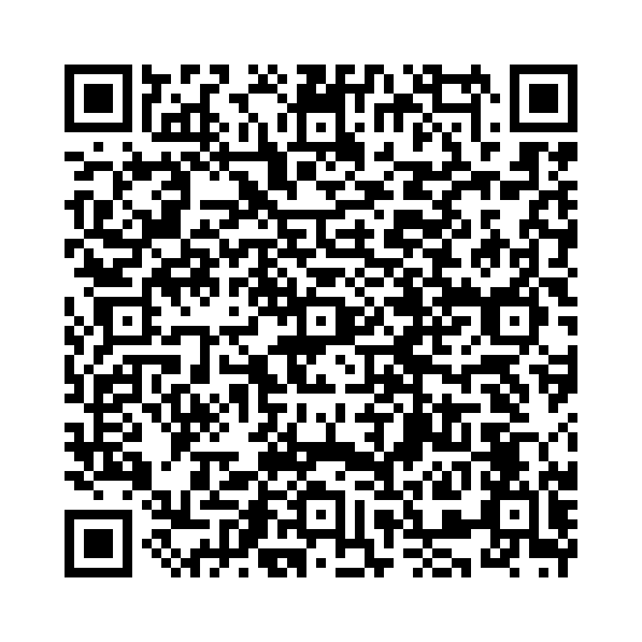

仮定法未来は、未来のあり得ない仮定や可能性の低い仮定を表現するために使われます。以下の表現が含まれます：
例文：
以下の単語を並び替えて正しい文を作成しましょう。（和訳を参考にしてください）

問題1: (he / call / If / should / let / me / please / know / ,) - 万一彼が電話してきたら、知らせてください。
解答: If he should call, please let me know。
解説: 「should」を使った仮定法未来で、可能性の低い未来を表現しています。
問題2: (If / I / were / to / the lottery / win / travel / would / I / the world) - もし宝くじに当たったら、世界中を旅行するだろう。
解答: If I were to win the lottery, I would travel the world。
解説: 「were to」を使った仮定法未来で、非現実的な未来の仮定を表現しています。
問題3: (could / only / I / meet / if / him) - 彼に会えたらいいのに！
解答: If only I could meet him!
解説: 「If only」を使った願望を表現しています。
問題4: (He / behaves / as / if / were / a king / he) - 彼はまるで王様のように振る舞う。
解答: He behaves as if he were a king。
解説: 「as if」を使った仮定法で、非現実の仮定を表現しています。
問題5: (as / though / she / speaks / were / a teacher / she) - 彼女はまるで先生のように話します。
解答: She speaks as though she were a teacher。
解説: 「as though」を使った仮定法で、非現実的な状況を表現しています。